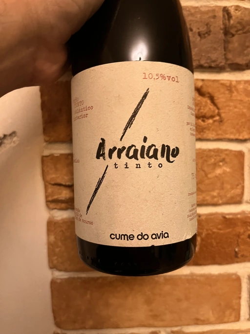

- Type
- Red Still, Dry
- Producer
- Cume do Avia
- Vintage
- 2019
- Location
- Spain, Vino de Mesa
- Grapes
- Treixadura, Godello, Torrontés
- Alcohol
- 10.5
- Sugar
- 1
- Price
- 616 UAH
- Cellar
- N/A
Producer
There are few viticultural regions as dramatic, wild, and diverse as Ribeira Sacra. Being a boundary between the cool, rainy Atlantic coast and Spain’s hot, dry interior, Ribeira Sacra enjoys the best and the worst of the two domains. The main threats to viticulture are the storms that blow in from the Atlantic, bringing plenty of rain and wind; and morning fogs. A paradise for fungus. And yet people grow vines and make wines here. Some locals even practice organic and biodynamic farming. And that’s truly heroic.
Among them are brothers Diego and Álvaro Colarte. Together with their cousins, they made a “completely irrational and unwise decision” to downshift from industrial Vigo to the family’s village. All that awaited them in 2005 was a ruin and a derelict vineyard. Eira dos Mouros land (named after mythological elves who safeguarded local knowledge) was abandoned by their ancestors in 1942! On a hill (a Cume) overlooking river Avia (hence the name of the winery), they restored the barren land by planting thirteen different indigenous grapes on a mosaic of terroirs - granite, grey and red schist, sand, clay, slate.
We put our youth into the project
~ Diego
This project was a genuine test of their determination and strength. On one hand, it was not backed by any family wealth. The quartet had to take out loans to buy all the necessary equipment. On the other hand, they could not rely on the knowledge and experience of other people. “The past of these forgotten grapes has been erased, leaving no one to discuss the ideal practices for them. Much knowledge was discarded with the introduction of chemicals to the vineyards after the second World War and there is no manual or record. We are trying to reinvent and rebuild this lost history,” Diego explained.
In 2008 they planted their first vines, and in 2012 finally made their first wines (or rather “vinification tests”, as Diego calls them). It’s sad and funny at the same time, but prior to this point, none of them had any winemaking experience.
In 2015, they began to find more enological stability and a clear direction in the cellar. After a decade of struggles, their doubt began to lift. Only to face yet another challenge in the form of mildew plague that is common in this humid region. It wiped out nearly their entire 2016 vintage with leftovers of morale. Just imagine this situation! They were on the brink of financial ruin, exhausted and almost broken.
Yet the next year was a blessing and inspiration. The tribe managed to craft wines that tasted like their dreams. And they were well received by the market. A happy point in their story full of challenges and doubts.
Ratings
2022-09-06 - 7.50
What a lovely wine. It’s easy, juicy, and quaffable. And what a beautiful composition of aromas: flowers, raspberries, strawberries, and forest floor. Medium-light body with only 10.5 abv, high acidity, and long and flavourful aftertaste with neat bloody touch. Not complicated, but so enjoyable.
Related